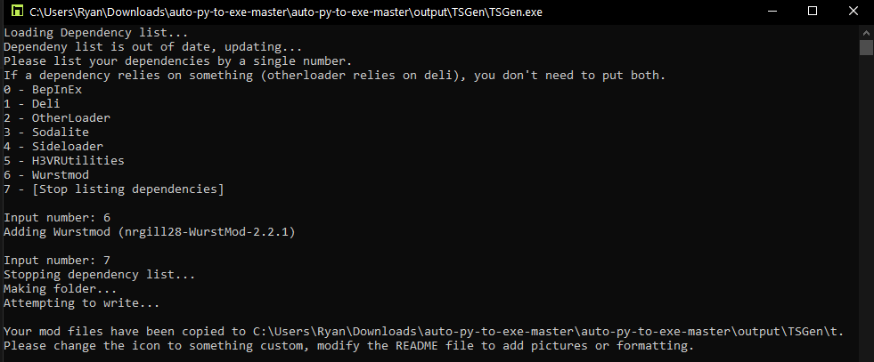

Thunderstore requires certain files to be present for it to even consider accepting your uploaded mod. Below are 3 sections, the first assumes you are making the files yourself, and the last 2 assume you want to use a tool to create them for you.
If you would like to update your mod, please see Updating a Thunderstore Package.
If you would like to check your files before uploading, please see TSGen.Check.
Note
Windows defender or other antivirus programs may interfere with the mentioned programs, either run them as administrator or let them through temporarily.
Required files for Thunderstore
Thunderstore requires 3 files to be present in your .zip upload:
- An icon, 256x256 in size
- A Thunderstore manifest that contains information about your mod
- A README file that displays text and images on your main page
The best thing to do is to log into Thunderstore using Discord or Github and checking the full details on the upload page.
Please see the Creating a Thunderstore Package page for details on how to place your mod into this file structure. After which, all you need to do is zip the files inside of the mod folder and upload it.
Using TSGen to Generate required files
Head on over to TSGen's github and download their latest release. You probably want to download TSGen_Extract_This.zip and extract it to it's own folder.
Running TSGen.exe will greet you with this page:

TSGen will prompt you for some general information about your mod:
- Mod name
- Version (It needs to be in the x.x.x format)
- Website url (usually for github links)
- Short description (displayed beside your mod in r2modman)
- Long description (displayed in the README file on the main page of your mod)
Next, it will prompt you for dependencies that your mod uses.

Input the number that corresponds to the top level dependencies you need.
Example:
Mod A requires WurstMod, Deli, and BepInEx
WurstMod requires Deli
Deli requires BepInEx
So Mod A's dependencies are:
- WurstMod

In the above picture you can see what the example would do in it's situation. You can close TSGen now by hitting enter or by closing the window.
Inside of the extracted TSGen folder, you should see a folder by the name of your mod:
[You mod name]/
icon.png
manifest.json
README.md
Please see the Creating a Thunderstore Package page for details on how to place your mod into this file structure.
Now that your files are compiled together, zip your files together and head on over to Thunderstore to upload your mod. Make sure to log in, then press the Upload button in the top left. Set it's category, drag your .zip, and hit upload.